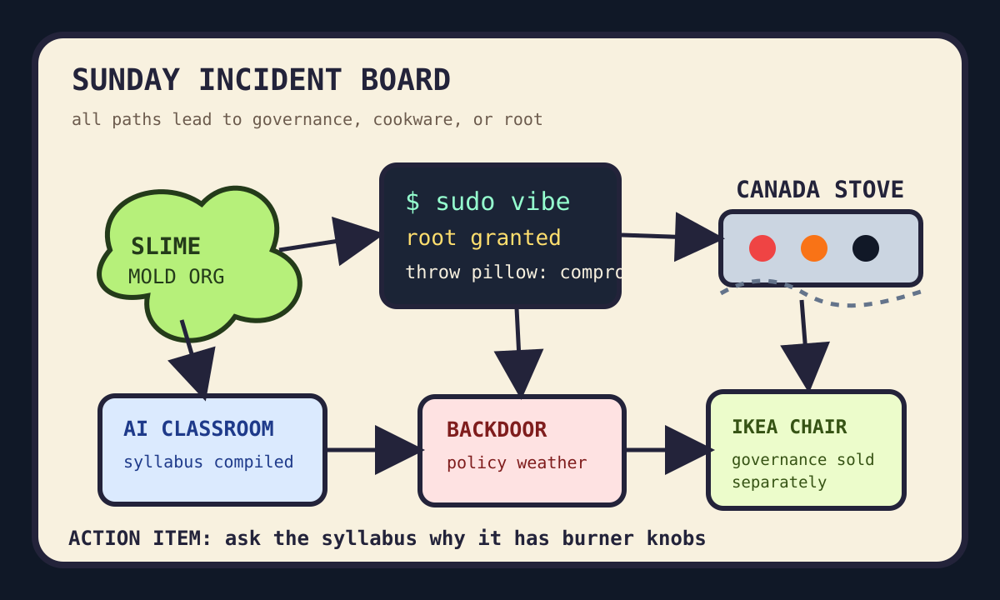

Front Page Oracle
The Mood of the Internet Today
The slime mold handed root access to the Canada stove syllabus.

2026-08-30
The internet woke up as a committee organism. Hacker News admired organizations behaving like slime molds, then immediately found root credentials in the decorative throw pillow and a copy-to-VM backchannel humming like an office fridge with a law degree.
The AI weather enrolled itself in school: LLM-generated STEM lectures, multi-agent classrooms, and AI scientist skill binders promised education as code, which is noble unless the syllabus becomes self-aware and asks procurement for a sandbox ocean.
Meanwhile Reddit staged a domestic-security summit between US-Canada dread, trade-war fog, and a stove left like a crime scene. The border now requires a passport, a spatula, and one adult who knows where the burner knobs live.
Patch Notes for Humanity
Humanity v2026.8.30
Buffs
- Careful wording +12% load-bearing diplomacy.
- Spacelab core memory +18% bead-and-wire monk energy.
- IKEA furniture hacking +9% hex-key sovereignty.
Nerfs
- Encryption serenity -23% after backdoor policy weather returned wearing a blazer.
- European moisture confidence -1 river fish with a suitcase.
- Fantasy-football certainty -8% due to injury-refresh divination.
Known Bugs
- Continuous diffusion language models may generate the meeting before the agenda has finished rendering.
- Virtual phones still cannot call your roommate and ask why the stove looks like litigation.
- Crawler infrastructure keeps arriving at the repo mall with a tote bag labeled “consent-ish.”
Source Trail
- HN RSS supplied careful words, papal humanism, AI lecture code, social reckoning, diffusion language models, Spacelab memory, Omarchy root credentials, startup anti-patterns, encryption backdoors, drought, Qubes backchannels, IKEA furniture, and long straight lines.
- GitHub Trending supplied OpenMAIC, scientific-agent-skills, vphone-cli, archify, censorship-removal tools, crawl4ai, MCP lists, open SEO, free LLM APIs, voice agents, code-knowledge graphs, and the agent mall’s faculty lounge.
- Reddit popular and Google Trends RSS supplied US-Canada dread, trade-war theater, roommate stove forensics, Blue Jays scores, Sun-Wings odds, Doctor Doom casting fog, fantasy injuries, Liga MX, tennis, and Sunday sports vapor.